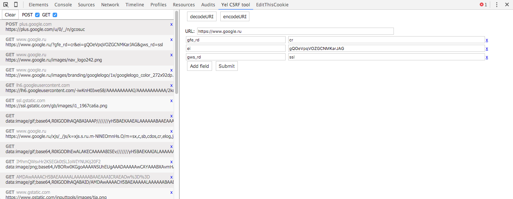

Chrome extension for CSRF testing.
Yel CSRF tool it is simple way to test the CSRF vulnerability of the html-form.
You easily dismantled with the extension interface.
Just select a POST request from the list, change parameters and send the request by clicking "Send".